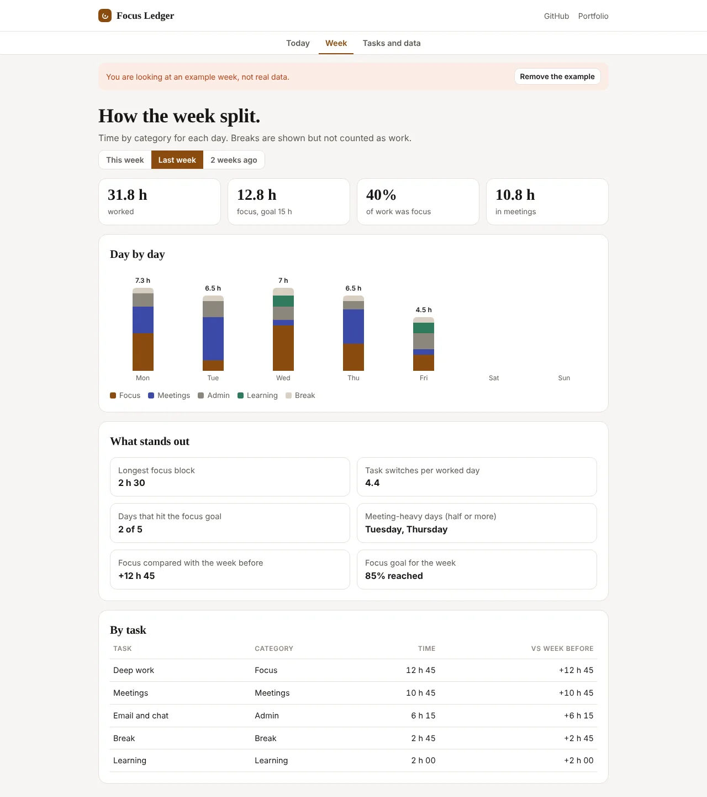

The problem
Knowledge workers want more focus time but have no numbers to plan with or to push back on meetings. The app has to cost almost nothing to use, or nobody keeps it up.

What it does
- Today. Tap a task to start, tap another to switch. A ring shows focus against the daily goal. Timeline with blocks you can delete or add by hand.
- Focus timer. 25, 50 or 90 minutes, with a sound and a notification.
- Week. Stacked bars per day by category, focus share and comparison with the week before.
- Insights. Longest focus block, task switches per day, days that hit the goal, meeting-heavy days.
Decisions
Decision
One running timer
Tapping another task switches. One tap keeps the habit alive, and totals always match the hours tracked.
Decision
Categories drive the numbers
Five categories, not task names, so weeks stay comparable when tasks change.
Decision
Manual blocks with a warning
Forgotten time can be added, and overlaps are saved but flagged.
What I would do next
- Edit blocks on past days.
- Import meetings from a calendar.
- A weekly summary with one suggestion.
No usage data yet, so no findings. The case study lists the measures I would track.